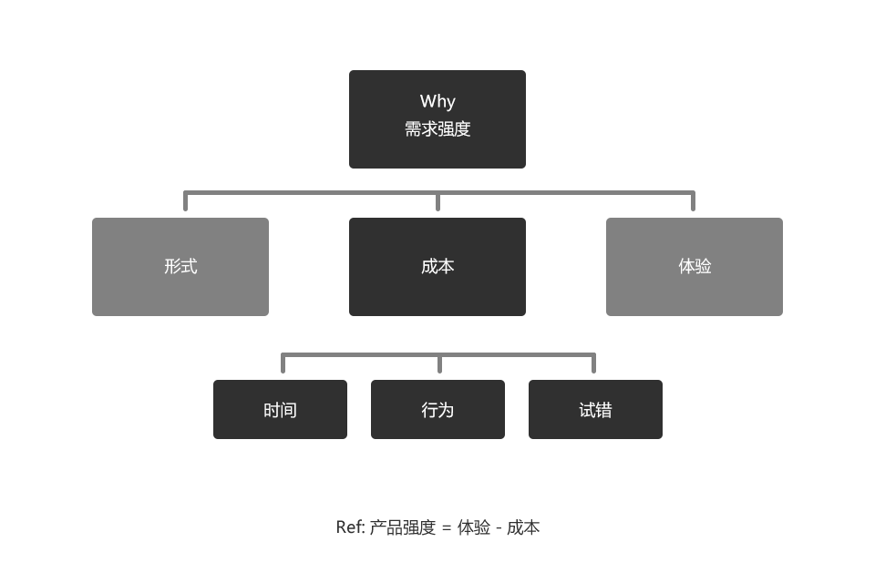
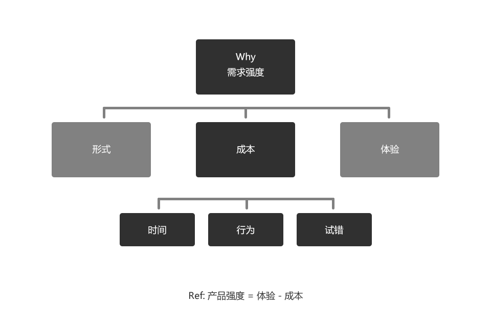

网易美学做评论弹幕的利弊
mark | 谢晓聪 | 2018-05-23
首先弹幕是什么，从表象层去看似乎是把评论消费+内容消费放在同一个舞台上。但如果从第一性原理分析我们可以进行一次拆解：弹幕评论可以被拆分为信息层和用户层，用户层具备一定的中心度特征时（eg.点度中心度、接近中心度）那么这个用户层所带来的社会资本（此时可以理解为社交能力）价值会很高。同时这个用户层的信息作为一个中间节点就有能力去链接更多的用户层来此发声。这也是我们俗称的评论消费场景。
#谁是我们的用户？#
目前我们的用户模型中16—25岁左右的年轻女性（学生or初入职场）覆盖了美妆新手、美妆易种草者的身份。在这部分画像的群体与在Bilibili上看美妆视频的群体有着相当高的身份耦合度。那么这对于我们来说，是个不错的细分用户群切入口，这一点是小红书做不到的，他们切的用户群体年龄普遍偏高、身份也不太一样（走的是一线都市丽人）。
#需求强度如何？需求场景是什么？#
正如前面我说过，弹幕的本质是在以社会资本属性（中心度）为链接点，去覆盖链接到更多的容易被中心度所吸引的用户群体产生消费。需求强度有个公式可以计算：需求强度=体验值-成本值（时间成本，行为成本，是错成本）；

洞察用户动机、行为：看到一篇质量高的干货内容or看到一篇精致的泛娱乐化内容时，会把内容认真的阅读完，并且希望得到一些有共鸣的内容反馈（eg.这个东西LZ说很好用，但真的适合我吗？她知道我的问题吗？LZ拍的照片是我喜欢的风格，那么这些妆容需要用到哪些美妆产品呢？），我有点懒所以此时我会去评论区找找看，有没有其他人提到这个问题orLZ有没有主动补充些内容。
上述的典型用户路径分析中就映射出了两个关键的成本指标：时间成本和行为成本，时间成本是用户从阅读完正文信息在去翻阅并找到目标评论内容过程中的时间，行为成本是用户在整个阅览过程中的步长。如果我们能直接将评论做成弹幕，在正文阅览中直接滚筒展示，那么我们就能帮用户节省更多的时间成本和行为成本，平日里用户花的时间和行为成本约高，对弹幕的需求强度就越强。
#这么做有什么弊端？#
有，图文弹幕评论只是功能层面的设计，无法建立壁垒；只要竞品具备足够优秀的内容+匹配的画像群体，那么对于这个功能，很有可能会对竞品的帮助更大(好在小红书的用户市场和我们截然相反) 。
能否建立壁垒？可以。但是不是从功能层面，而是从产品策略层面——打造良性的产品生态，建立认知壁垒；资深类和非资深类美妆用户有很多差异化的特征，其中我们可以作为抓手的就是跟用户之间的信任感。让非资深类的美妆用户对我的平台建立起客观、公正的认知，这样才能真正建立起用户的粘性以及壁垒。

#谁是我们的用户？#
目前我们的用户模型中16—25岁左右的年轻女性（学生or初入职场）覆盖了美妆新手、美妆易种草者的身份。在这部分画像的群体与在Bilibili上看美妆视频的群体有着相当高的身份耦合度。那么这对于我们来说，是个不错的细分用户群切入口，这一点是小红书做不到的，他们切的用户群体年龄普遍偏高、身份也不太一样（走的是一线都市丽人）。
#需求强度如何？需求场景是什么？#
正如前面我说过，弹幕的本质是在以社会资本属性（中心度）为链接点，去覆盖链接到更多的容易被中心度所吸引的用户群体产生消费。需求强度有个公式可以计算：需求强度=体验值-成本值（时间成本，行为成本，是错成本）；

上述的典型用户路径分析中就映射出了两个关键的成本指标：时间成本和行为成本，时间成本是用户从阅读完正文信息在去翻阅并找到目标评论内容过程中的时间，行为成本是用户在整个阅览过程中的步长。如果我们能直接将评论做成弹幕，在正文阅览中直接滚筒展示，那么我们就能帮用户节省更多的时间成本和行为成本，平日里用户花的时间和行为成本约高，对弹幕的需求强度就越强。
#这么做有什么弊端？#
有，图文弹幕评论只是功能层面的设计，无法建立壁垒；只要竞品具备足够优秀的内容+匹配的画像群体，那么对于这个功能，很有可能会对竞品的帮助更大(好在小红书的用户市场和我们截然相反) 。
能否建立壁垒？可以。但是不是从功能层面，而是从产品策略层面——打造良性的产品生态，建立认知壁垒；资深类和非资深类美妆用户有很多差异化的特征，其中我们可以作为抓手的就是跟用户之间的信任感。让非资深类的美妆用户对我的平台建立起客观、公正的认知，这样才能真正建立起用户的粘性以及壁垒。
562820976@qq.com | 联系